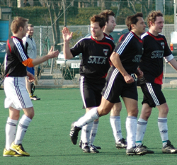
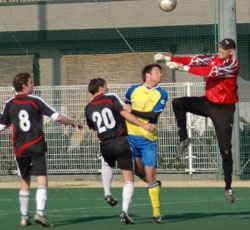
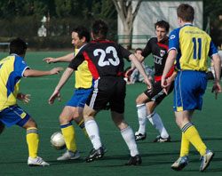
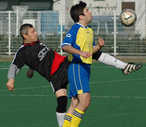
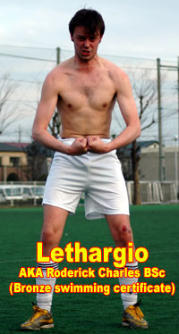

|
Hachioji Park Sunday 9th March,
Sala kept themselves in the hunt for the TML title with a hard fought victory over Geckoes in Saitama on Sunday.
An emotional day saw touching drama on the touchline as Charles announced his immediate retirement from the Chiba side, having been handpicked to lead an expedition to find the world’s longest snake.
Worse was to follow when it became clear that Clarkey would not be coming due to an accident with a piano (Dropped on his head?)
Nevertheless Sala threw themselves into the action from the start, fighting back the tears, and went one up inside the first ten minutes.
Some nice interplay between Brookey and Pete on the right flank saw the naturalized Englishman cut inside and arrow a wicked 20 yard shot into the top right corner.
Sala continued to tear it up and got a second when Toby latched on to an excellent through ball and finished tidily. The industry shown at this point was exceptional and Geckoes never really managed to get into their stride. Credit for that was mainly due to Scotty and Pete’s tireless destructive work in the middle of the park.
A third didn’t seem long in coming, and Dhugal, who had suffered a couple of dodgy offside calls already (He’s actually lost five or six perfectly good goals to over exuberant arm raising this season) finally managed to persuade the Geckoes linesman that he is really that quick and lobbed the onrushing keeper to make it three. He should have repeated the feat minutes later when he raced through again but got the ball caught up in his big toblerone feet and eventually dinked it just wide.
Masa and Lenny also enjoyed excellent first halves down the left flank, linking up on numerous occasions and providing a lot of ball for Toby and Dhugal.
So, half time came, three nil up and game seemingly over when suddenly the sport of football clicked its heels and led us on a merry dance in the shape of a marathon 50 minute+ second half featuring several bookings, three goals, woodwork, a saved penalty and four or five injuries. Oh yeah, and lots and lots of shouting. It is a little bit sad to say but due to the nature of this game, I doubt that many people left it thinking that they had enjoyed themselves. I for one no longer look forward to this particular fixture, it’s all just starting to get a little bit out of hand on both sides.
I’m sure that most of the Geckoes gripes will stem from the fact that we should have had a couple more yellow cards and could easily, on another day, have had two players sent off. On the other hand I thought the guy that physically throttled Guido with both hands was pretty lucky to stay on the park as well, so it works both ways. At the end of the day, the referee makes these decisions and none of the players can do anything to change that. It is perhaps time for a little bit more maturity to be shown throughout the TML, from Sala as much as any other team, as referees are not going to put up with this level of abuse much longer, and no referees means no league. The cynical among you may think that Sid prompted me to write this but I can assure you he didn’t and the fact is that having just played my last TML game it’s fairly irrelevant to me anyway. Sometimes going on the pitch these days feels like going up against a dog which has been goaded and poked with a hot iron in preparation for a fight. I’m pretty sure some other teams feel like that when they come to play us, this is not a ‘holier than thou’ issue. The bottom line is: It’s not a fight. It’s a game of amateur football, and recently it’s been getting hard to tell the difference.
Anyway, back to the game. Sala started out well, Scotty’s thundering shot was brilliantly saved by the Geckoes keeper as it flew towards the top right corner.
The turning point though came about ten minutes into the second half, when Sid spilled a rather tame free kick and the rebound was thrashed into the net from point blank range. Sala then proceeded to completely and I mean completely, lose the plot. In the next twenty minutes we probably had one minute of possession. Geckoes poured forward. Sala argued amongst themselves, made petulant fouls and generally kicked it (or more likely sliced it) in the direction their noses were pointing. Watching from the sidelines, as Doug Lee will also testify to, it was like watching an eight year old kid who had just dropped an acid(Didn’t that actually happen on Grange Hill?). Jekyll and Hyde is too appropriate an analogy not to mention.
Inevitably Geckoes got a second when Kazu danced through the static Sala rearguard and lashed home a great shot, and by this time we were a dribbling wreck on, by the looks of it, a very bad trip.
Geckoes would surely have got a third had they been able to deliver any quality of ball from set pieces but corner after corner went straight out and several free kicks were totally wasted. Chances came and went. At this point Brookey mixed up the attack with the introduction of virgin strikeforce Charles and Anderson.
The partnership got off to a good start when Stu hooked over a cross to the back post, but Charles’s header lacked power. Also around about this time Sala’s injury crisis began. First Dhugal, then Pete, Toby and Stu all limped off, Pete with suspected ligament damage which looks certain to spell the end of his season. A desperate shame given that he would certainly have been amongst the favorites for player of the year, his performance yesterday typifying the way he has played all season.
Sala got out of jail eventually when Charles chested the ball down and swiveled to fire home in the six yard box following a free kick. The relief was palpable.
Yet amazingly more drama was to come when Jorge awarded a penalty for handball against Shige. Sid more than made up for his previous error with a cracking save down to his left and that was basically that. In the final minutes Toby and Charles broke away and should have got a fifth but Charles’s shot was well parried and Toby’s rebound was miraculously tipped onto the bar.
In the end Sala did just enough to win, mostly on the back of an excellent first half performance, but full credit to the Geckoes who just don’t know when they are beaten.
As for me, I am done and dusted. Off to Shizuoka and (perhaps) marital bliss. To everyone out there who I have offended, kicked, consumed, bamboozled or simply nutmegged: my apologies. It’s been a fun three or four years, and as they say in Germany, as long as the music is fast nobody will notice.
Report by Lethargio
|